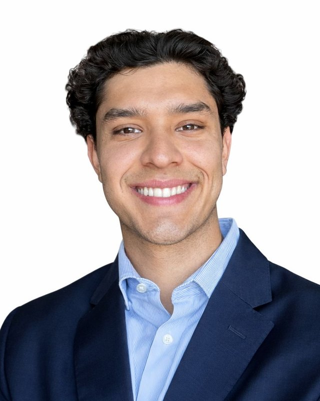

Seville, Spain
Santiago
González Portfolio
Advertising, design and digital product. I work across strategy, visual direction and the tools that make a campaign actually work.
Selected projects
Digital Advertising · Individual project
Esenzia Club
A campaign that doesn’t try to please everyone, connected to a landing page that captures, stores and replies to every lead on its own.

- My role
- Strategy, media, design and development
- Brand
- Esenzia, Seville streetwear label
- Channels
- Social Ads, Display, SEM, Email
- Stack
- Figma Make, React, Supabase, Resend, GA4
Challenge
Esenzia competes in a crowded streetwear market against brands like Nude Project and Scuffers. The goal: position it among young people and grow lead generation within six months.
Insight
“The harder a brand tries to please everyone, the less special it makes me feel. I’d rather be chosen than sold to.”
Idea
“It’s not for you.” Instead of persuading, the campaign invites you to prove you belong. The copy (“Get in if you fit”, “Only some people get it”) leads to a landing page where signing up is how you join the club.
What I did
The whole project, from strategy to execution. I defined the channels and the media strategy: Reels and Stories for reach, Lead Ads and SEM for acquisition, display for remarketing, and the KPIs for each (CTR, CPC, CPA, conversion and open rates).
Then I designed the campaign assets, the landing page and the welcome email, and built the lead capture system with Supabase, Resend and Google Analytics.
How the lead capture system works
- Instagram · GoogleSees the adStory, banner or search
- LandingSigns upName, email and phone
- SupabaseLead is storedDatabase and Edge Function
- ResendGets their codeAutomated email with ESENZIA10
- GA4It’s measuredgenerate_lead event and conversion
Working, not just designed
28
test sign-ups stored in Supabase during development, each one sent its welcome email automatically.
Personal data hidden. Email sending runs in a test environment, pending a verified domain.


Branding and communication · University project
Observatory
Identity, social media and website for an observatory that teaches people to read digital narratives before believing or sharing them.

- Brief
- Brief #1, Universidad Loyola
- Deliverables
- Identity, carousel, stories, social profile and website
- Typeface
- Satoshi
- Color
- Tools
- Figma, Figma Make, Canva
The question
Where is the truth? The observatory exists to encourage critical thinking: analysing campaigns and social media narratives, exposing misinformation and explaining how algorithms shape what we see.
Concept
Not everything is what it seems.
Two overlapping circles sum up the idea: the truth lies in the intersection, and you have to cross-check before you share. Every piece closes with the same line: “Question. Cross-check. Analyse.”
Visual system
A logo made of geometric pieces that fit together like a puzzle and change colour. Satoshi for strong contrasts in hierarchy, and three colours (orange, blue and lime) that work as highlights and as a code between sections.


Campaign pieces
An identity that adapts to every message


Launch carousel · Instagram
5 reasons a scientist would never be a flat-earther


“Narratives in sight” series · Instagram and TikTok
Every week, one digital narrative under the magnifying glass


The website
Think beyond the feed
Piensamás alládel feed
Homepage, real-time signals, manifesto, narratives in orbit and a lab with four themes you can filter by tab:
Science is competing for your attention too
When viral doesn’t mean true
Who gets left out of the frame?
Networks that connect to create change
Graphic Design · Individual project
OFFF Sevilla ’26
Identity proposal for an edition of the festival at Seville’s Real Fábrica de Artillería: digital energy in an industrial space.
- Deliverables
- Logo, typography and applications
- Typefaces
- Bespoke Stencil, Clash Display
- Formats
- Posters, stage
- Note
- Unofficial academic proposal
Concept
OFFF celebrates digital creativity and visual experimentation. Seville brought the contrast: a former military building turned into a cultural hub. The identity brings both worlds together.
Decisions
The stencil cuts come from industrial signage; the italics add speed; the pink glow points to the screen. Clash Display, wide and bold, carries the practical information and reads well at large sizes, in the auditorium and on stage.


About me

I study Advertising and Digital Marketing at Universidad Loyola in Seville. Before that I started International Marketing and Business Analytics at Universidad del Valle de Guatemala, which is where my habit of measuring what I do comes from.
I’m drawn to projects where strategy, design and technology have to work together: a campaign with a landing page that actually converts, or an identity that holds up as well on a poster as on a screen.
Education
- Advertising and Digital MarketingUniversidad Loyola · 2023 – present
- International Marketing and Business AnalyticsUniversidad del Valle de Guatemala · 2023
Tools
- Adobe Creative CloudFull suite
- Microsoft OfficeFull suite
- Claude
- Supabase
- Resend
Languages
- SpanishNative
- EnglishC1